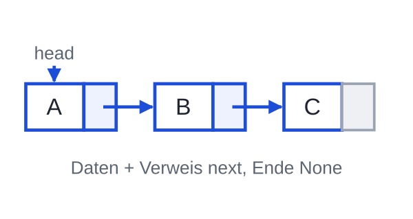

Überblick › LB 2/3 Datenstrukturen
3.1 Verkettete Listen (linked lists)
Bei einer Schnitzeljagd steht auf jedem Zettel eine Aufgabe und der Ort des nächsten Zettels. Wer den ersten Zettel hat, kann alle anderen nacheinander finden – aber nicht direkt zum fünften springen. Genau so ist eine verkettete Liste aufgebaut.
In 3.0.1 hast du gesehen, warum Einfügen und Löschen in einer Python-Liste O(n) kosten: Die Elemente müssen lückenlos nebeneinander liegen, also muss beim Einfügen alles dahinter rutschen. Die verkettete Liste verzichtet auf diese Bedingung. Lege deine Lösungen zu dieser Seite in deinem Repository im Ordner 1_listen ab (siehe 3.0.2).
Schritt 1: Die Idee – Knoten und Verweise
Ein Knoten einer einfach verketteten Liste besteht aus zwei Teilen:
- Daten: die eigentlichen Informationen, die in der Liste gespeichert werden sollen.
- Verweis auf den nächsten Knoten: eine Referenz auf das nächste Knotenobjekt oder
Noneam Ende.
Im Video siehst du, wie Knoten zu einer Kette verbunden werden und warum die Liste nur ihren ersten Knoten kennt.
Kurz geprüft 1: Kästchen und Pfeile AFB I
Eine verkettete Liste enthält die Werte 7, 4 und 9 in dieser Reihenfolge. Zeichne sie als Kästchen mit Pfeilen. Worauf zeigt head? Was steht im next-Feld des Knotens mit der 9?
Lösung zeigen
head → [7|•] → [4|•] → [9|None]. head zeigt auf den Knoten mit der 7, im next-Feld des Knotens mit der 9 steht None, weil er der letzte ist.
Weiter mit Schritt 2: Die Klasse Node →
Schritt 2: Die Klasse Node
In Python ist ein Knoten ein Objekt der Klasse Node mit den Attributen data und next. Im Video schreibst du die Klasse in Thonny und verkettest drei Knoten von Hand in der Kommandozeile. Achte rechts im Speicherbild darauf, dass node1.next = node2 nur einen Pfeil setzt und nichts kopiert.

Node in Thonny – Knoten erzeugen und von Hand verketten (ca. 2 min)Jetzt du – mittippen: Lege 1_listen/verkettete_liste.py an und tippe den Code aus dem Video ab: die Klasse Node. Starte mit F5 und probiere in der Kommandozeile aus: node1 = Node(1) · node2 = Node(2). Danach committen, z. B. 3.1 Schritt 2: Node angelegt.
Zum Nachlesen steht derselbe Code mit allen Erklärungen in Beispiel 1:
Kurz geprüft 2: Pfeilen folgen AFB I
In Thonny wird eingegeben: a = Node("x"), b = Node("y"), b.next = a. Was geben print(b.next.data) und print(a.next) aus? Was passiert bei print(a.next.data)? Überlege erst, dann probiere es aus.
Lösung zeigen
b.next.data ist x, denn b.next zeigt auf den Knoten a. a.next ist None. a.next.data löst einen AttributeError aus, weil None kein Attribut data hat.
Weiter mit Schritt 3: Anhängen mit append →
Schritt 3: Anhängen mit append
Damit man Knoten nicht von Hand verketten muss, gibt es die Klasse LinkedList. Sie speichert nur head, den ersten Knoten. Die Methode append hängt hinten an: Dazu läuft eine Hilfsvariable current vom Anfang bis zum letzten Knoten. Achte im Video auf den Sonderfall der leeren Liste und darauf, wo current stehen bleibt.
append – Schritt für Schritt (ca. 2 min)Jetzt du – mittippen: Ergänze in 1_listen/verkettete_liste.py den Code aus dem Video: die Klasse LinkedList und die Methode append. Starte mit F5 und probiere in der Kommandozeile aus: liste = LinkedList() · liste.append(1). Danach committen, z. B. 3.1 Schritt 3: LinkedList, append ergänzt.
Kurz geprüft 3: Wie weit läuft current? AFB I
Eine Liste hat 5 Knoten. Wie oft wird beim nächsten append die Zeile current = current.next ausgeführt? Und warum braucht append den Fall if self.head is None?
Lösung zeigen
4-mal: current startet beim 1. Knoten und muss bis zum 5. weiterlaufen. Bei einer leeren Liste gibt es keinen letzten Knoten – current wäre None und current.next würde einen AttributeError auslösen. Deshalb wird der neue Knoten dann direkt zum head.
Weiter mit Schritt 4: Durchlaufen und Suchen →
Schritt 4: Durchlaufen und Suchen
Fast jede Methode einer verketteten Liste beginnt gleich: current = self.head, dann current = current.next, bis man am Ziel ist. Im Video siehst du das an display, das alle Werte ausgibt, und wie Suchen nach demselben Muster funktioniert. Achte darauf, dass head dabei nicht verändert wird – und wie join die Texte zusammenklebt.
Jetzt du – mittippen: Ergänze in 1_listen/verkettete_liste.py den Code aus dem Video: die Methode display. Starte mit F5, lege die Objekte wie im Video in der Kommandozeile an und probiere dann aus: liste.display(). Danach committen, z. B. 3.1 Schritt 4: display ergänzt.
Kurz geprüft 4: Zwei Schleifen im Vergleich AFB I
In display lautet die Schleife while current is not None, in append dagegen while current.next is not None. Erkläre den Unterschied in einem Satz.
Lösung zeigen
display muss jeden Knoten verarbeiten, auch den letzten – also läuft current bis hinter das Ende (None). append muss auf dem letzten Knoten stehen bleiben, um dort anzuhängen.
Danach: Aufgabe 3.1.1 – eine fehlerhafte Ausgabemethode, die genau gegen diese Regel verstößt.
Weiter mit Schritt 5: Einfügen am Anfang →
Schritt 5: Einfügen am Anfang
Vorn einfügen geht ohne Schleife: Es werden nur zwei Verweise umgesetzt, deshalb kostet es O(1) – egal, wie lang die Liste ist. Die Reihenfolge der beiden Zeilen entscheidet, ob die Liste erhalten bleibt. Achte im Video darauf, welcher Pfeil zuerst gesetzt wird.
Jetzt du – mittippen: Ergänze in 1_listen/verkettete_liste.py den Code aus dem Video: die Methode insert_at_start. Starte mit F5, lege die Objekte wie im Video in der Kommandozeile an und probiere dann aus: liste.insert_at_start(0). Danach committen, z. B. 3.1 Schritt 5: insert_at_start ergänzt.
Kurz geprüft 5: Vertauschte Zeilen AFB II
Ein Mitschüler schreibt in insert_at_start zuerst self.head = neu und danach neu.next = self.head. Zeichne, was mit der Liste 1 → 2 passiert, wenn er insert_at_start(0) aufruft.
Lösung zeigen
Nach self.head = neu zeigt head auf den neuen Knoten 0. Dann setzt neu.next = self.head den Verweis von 0 auf … 0 selbst. Die Knoten 1 und 2 sind nicht mehr erreichbar, und display würde endlos 0 ausgeben.
Hinweis: Verweise selbst umhängen
Öffne im Kursmenü links die Seite Zeiger-Werkstatt. Dort hängst du die Pfeile selbst um. Die Übung „3.1 Einfügen am Anfang“ prüft, ob deine Reihenfolge stimmt, und zeigt dir, wenn dabei Knoten verloren gehen – so kannst du auch Kurz geprüft 5 nachstellen. In der Übung „3.1 Durchlaufen bis zum Ende“ lässt du current wie in append bis zum letzten Knoten wandern.
Danach: Aufgabe 3.1.2 – eigene Methoden zum Durchlaufen und Einfügen.
Weiter mit Schritt 6: Löschen →
Schritt 6: Löschen
Beim Löschen wird ein Knoten übersprungen: Sein Vorgänger zeigt danach direkt auf seinen Nachfolger. Deshalb muss current vor dem zu löschenden Knoten stehen bleiben. Achte im Video auf die beiden Sonderfälle: leere Liste und Wert im ersten Knoten.
Jetzt du – mittippen: Ergänze in 1_listen/verkettete_liste.py den Code aus dem Video: die Methode delete. Starte mit F5, lege die Objekte wie im Video in der Kommandozeile an und probiere dann aus: liste.delete(2) · liste.delete(0). Danach committen, z. B. 3.1 Schritt 6: delete ergänzt.
Kurz geprüft 6: Wo steht current? AFB I
Die Liste ist 4 → 8 → 15. Auf welchem Knoten steht current, wenn delete(15) den Verweis umsetzt? Welcher Verweis ändert sich, und worauf zeigt er danach?
Lösung zeigen
current steht auf dem Knoten 8, denn current.next.data ist dort 15. Das next von 8 zeigt danach auf current.next.next, also auf None – die 8 ist jetzt der letzte Knoten.
Hinweis: Löschen in der Zeiger-Werkstatt
Öffne im Kursmenü links die Seite Zeiger-Werkstatt. In der Übung „3.1 Löschen“ setzt du current.next = current.next.next selbst um und siehst, dass der übersprungene Knoten danach nicht mehr erreichbar ist.
Danach: Aufgabe 3.1.3 – alle Methoden zusammen, als Kästchen mit Pfeilen.
Alles zusammen: die Klasse LinkedList
Hier steht die vollständige Klasse aus den Videos 3–6 zum Nachlesen, mit Testprogramm, Speicherbild und Kontrolltabelle.

Vergleich mit dem Array (Python-Liste)
| verkettete Liste | Array / Python-Liste | |
|---|---|---|
| Zugriff auf das k-te Element | O(n), Liste von vorn durchlaufen | O(1), direkt über den Index |
| Einfügen/Löschen am Anfang | O(1), nur Verweise umsetzen | O(n), alle Elemente verschieben |
| Einfügen/Löschen in der Mitte | O(n) für die Suche, dann O(1) | O(n) für das Verschieben |
| Größe | wächst knotenweise, kein Umkopieren nötig | bei voller Kapazität Umkopieren in einen größeren Speicherbereich |
| Speicher | zusätzlich ein Verweis pro Knoten | kompakt, ggf. ungenutzte Reserveplätze |
Einfach verkettete Listen sind eine wichtige Datenstruktur und bilden unter anderem die Grundlage für Stapel (Stack) und Schlangen (Queue).
Praxisbezug: Verkettungen im Alltag und im Beruf
Alltag: Die Vor- und Zurück-Funktion deines Browsers oder die „Nächster Titel“-Taste im Musikplayer lassen sich als (doppelt) verkettete Liste umsetzen: Jede Seite bzw. jeder Titel kennt seinen Vorgänger und Nachfolger.
Beruf: Betriebssystementwicklerinnen und -entwickler verwalten z. B. im Linux-Kernel Prozesse und freie Speicherblöcke in verketteten Listen, weil ständig Elemente eingefügt und entfernt werden, ohne dass Speicher umkopiert werden darf. Auch Blockchains sind eine Form verketteter Liste: Jeder Block enthält einen Verweis (Hash) auf den vorherigen.
Das Wichtigste
Einfach verkettete Liste: Eine dynamische Datenstruktur aus einer Folge von Knoten. Jeder Knoten speichert Daten und einen Verweis auf den nächsten Knoten.
Kopf (head): Die Liste selbst kennt nur den ersten Knoten. Der letzte Knoten verweist auf None.
Zugriff auf das k-te Element: O(n), weil man von vorn durchlaufen muss.
Einfügen/Löschen: Am Anfang O(1). An einer bekannten Stelle ebenfalls O(1), das Finden dieser Stelle kostet aber O(n).
Grundaufgaben
Aufgabe 3.1.1: Fehler finden AFB II
Datei: 1_listen/verkettete_liste.py – weiterführen; füge die Methode zum Ausprobieren in deine Klasse LinkedList ein (nextNode heißt bei dir next)
Commits: 3.1.1: fehlerhaftes print_ll zum Testen eingefügt · nach der Korrektur: 3.1.1: print_ll korrigiert und getestet
Eine frühere Version der Ausgabemethode sah so aus:
def print_ll(self):
ll_str = ""
while self.head:
ll_str = ll_str + self.head.data + "--->"
self.head = self.head.nextNode
print(ll_str)Erkläre, was nach einem Aufruf von print_ll() mit der Liste passiert, und korrigiere die Methode.
Aufgabe 3.1.2: Liste erweitern AFB II–III
Datei: 1_listen/verkettete_liste.py – weiterführen; Testfälle in 1_listen/test_verkettete_liste.py
Commits: nach Teil 1: 3.1.2 Teil 1: laenge und enthaelt ergänzt, Tests ok · nach Teil 2: 3.1.2 Teil 2: insert_after ergänzt, Tests ok · nur wenn du Teil 3 programmierst: 3.1.2 Teil 3: append in O(1), alle Tests weiter ok
- Ergänze die Methoden
laenge()undenthaelt(data). - Ergänze
insert_after(ziel, data), die einen neuen Knoten hinter dem ersten Knoten mit dem Wertzieleinfügt. - Das Anhängen mit
appendliegt in O(n). Schlage eine Änderung der Klasse vor, mit der es in O(1) gelingt, und beurteile den Nachteil.
Das kann ich jetzt
Grau steht, was der Lehrplan verlangt, darunter, was das für dieses Thema konkret heißt. Hake einen Punkt ab, wenn er in deinem Hefter zusammengefasst ist und du ihn ohne Hilfe kannst. Wie du ihn zusammenfasst, entscheidest du selbst. Die Haken speichert nur dein Browser.
Lehrplan LB 2 Liste (Kennen von komplexen Datenstrukturen)